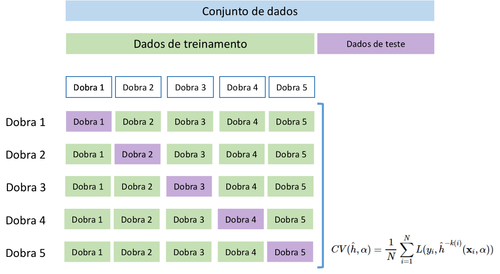
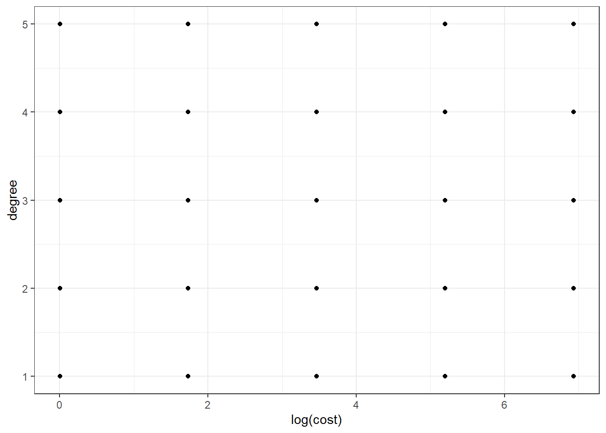
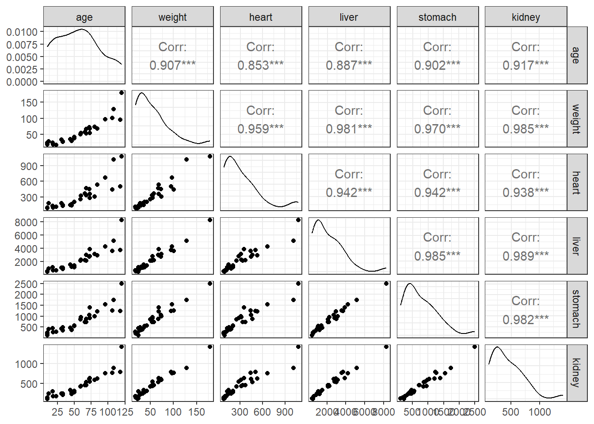
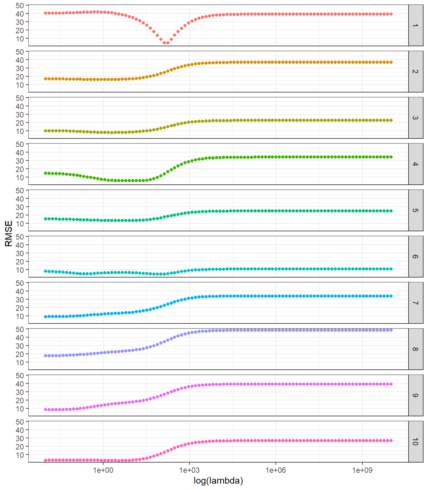
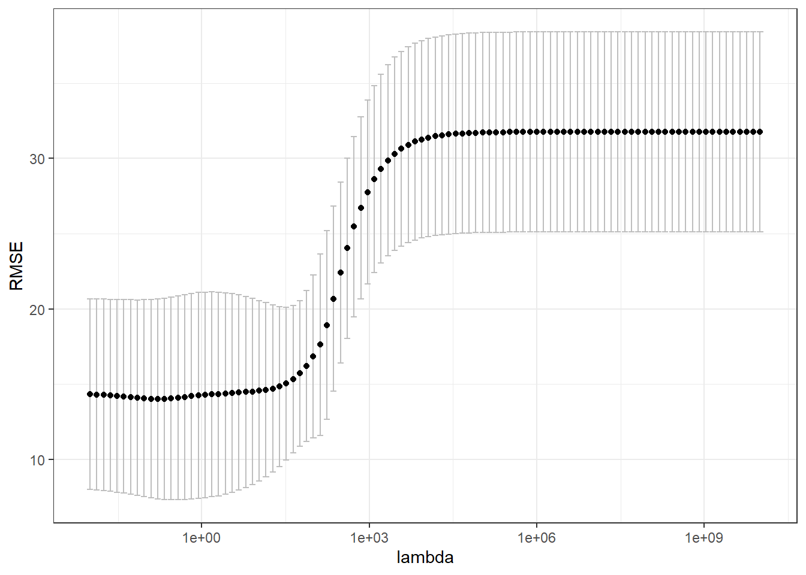

Validação cruzada e grid search
Validação cruzada e grid search
Seja a modelagem de uma resposta \(y\) a qual supõe-se dependente de um vetor de variáveis de entrada ou preditoras \(\mathbf{x} = [x_1, ..., x_k]^T\). Um modelo desconhecido pode ser denotado \(f(\mathbf{\mathbf{x}, \mathbf{\alpha}})\), onde \(\mathbf{\alpha}\) consiste em um (ou um conjunto de) hyperparâmetro que minimiza o erro de previsão. Por exemplo, para a regressão rígida, o hiperparâmetro consiste na constante de regularização ou penalização de encolhimento, \(\lambda\). Já a regressão pr vetores de suporte apresenta dois hiperparâmetros principais, o valor do erro máximo permitido na função perda, \(\varepsilon\) e o valor da penalização na otimização, \(C\). Um conjunto de observações de treino, \(\mathcal{T} = (\mathbf{x}_1,y_1), ..., (\mathbf{x}_N,y_N)\), obtidos da distribuição de probabilidade conjunta de \(\mathbf{x},y\), \(P(\mathbf{x},y)\), está disponível para o propósito de estimativas. O modelo estimado, \(\hat{f}(\mathbf{x}, \mathbf{\alpha})\), é obtido pela minimização de uma função perda, que mede a distância entre o modelo e as observações de treino. No caso de problemas de regressão, \(y \in \mathcal{R}^1\), a escolha mais comum é a função perda quadrática, \(L(y,\hat{f}(\mathbf{x}, \mathbf{\alpha})) = (y-\hat{f}(\mathbf{x}, \mathbf{\alpha}))^2\). O erro de generalização ou de teste pode ser calculado segundo a Equação a seguir, onde \((\mathbf{x}_0,y_0)\) é uma nova observação. \[ Err_\mathcal{T} = E[L(y_0,\hat{f}(\mathbf{x}_0, \mathbf{\alpha}))|\mathcal{T}] \] O erro de treino, \(\overline{err} = (1/N)\sum_{i=1}^{N}L(y_i,\hat{h}(\mathbf{x}_i, \mathbf{\alpha}))\), sempre será maior que o erro de generalização, \(Err_\mathcal{T}\). A forma mais eficiente e prática de estimar o erro de generalização é através da validação cruzada (HASTIE et al., 2009).
Validação cruzada por dados de treino e teste
A validação cruzada por dados de treino e teste é basicamente o que foi feito nos métodos aprendidos até aqui. As \(N\) observações de treino disponíveis, \(\mathcal{T}\), são divididas em observações de treino e teste. O modelo é estimado usando as observações de treino e testado nas observações de teste. Conforme explicado, a própria função perda pode ser usada para avaliar a capacidade de generalização do modelo, mas, na prática, algumas outras métricas podem ser úteis para avaliar o erro em dados de teste.
A métrica \(R^2\), \(R^2 \in [0,1]\), denominada coeficiente de determinação, consiste na proporção da variabilidade dos dados explicados pelo modelo. Quanto maior é o valor de \(R^2\) para os dados de teste, maior a capacidade de generalização do modelo. \[ R^2(y,\hat{y}) = 1 - \frac{\sum_{i=1}^{n}{(y_i - \hat{y}_i)}^2}{\sum_{i=1}^{n}{(y_i - \bar{y})}^2} \]
Se o modelo for pior do que um modelo simples que prevê a média, \(\hat{y} = \overline{y}\), o \(R^2\) pode ser negativo. Isso ocorre porque o denominador, que representa a variabilidade total da resposta, pode ser menor do que o numerador, que expressa a variabilidade explicada pelo modelo. Essa situação pode ocorrer na validação cruzada, na qual os modelos são testados em dados futuros, e, posteriormente, a métrica é calculada.
A raiz do erro quadrático médio (root mean square error - RMSE) consiste na raiz da média dos quadrados dos erros de previsão de teste. O RMSE tem a mesma unidade da resposta em estudo, porém é mais impactado por outliers, demonstrando a influência destes no erro de previsão. Esta métrica é uma boa opção quando deseja-se mensurar o erro na mesma unidade da resposta. \[ RMSE (y,\hat{y}) = \sqrt{\frac{1}{n} \sum_{i=1}^{n}{(y_i - \hat{y}_i)}^2} \]
O erro médio absoluto (mean absolute error - MAE) mede a média dos valores absolutos das diferenças entre o valor real e o valor predito. Essa métrica é mais robusta a outliers e também mede o erro na mesma unidade de medida da resposta. \[ MAE (y,\hat{y}) = \frac{1}{n} \sum_{i=1}^{n}\left|y_i - \hat{y}_i\right| \]
Há dois problemas mais latentes na abordagem treino e teste. O erro estimado nos dados de teste apresentam alta variabilidade dependendo das observações que foram sorteadas para treino e teste. Devido uma parte significativa das observações ser separada para teste, geralmente a abordagem em questão tende a superestimar o erro do modelo quando aplicado em todo conjunto de dados (GARETH et al., 2013).
Validação cruzada por \(k\)-dobras
A validação cruzada via \(k\)-dobras (\(k\)-fold cross-validation) é a abordagem mais usada dadas suas propriedades e simplicidade. Particionando os dados disponíveis em \(K\) folds, \(k = 1, ..., K\), com aproximadamente o mesmo número de observações em cada partição, \(n_k \sim N/K\), para a \(k\)-ésima partição o modelo é estimado usando os dados das outras \(K-1\) partições ou dobras, enquanto o erro é estimado na \(k\)-ésima dobra. Seja a função aproximada com a \(k\)-ésima dobra excluída, \(\hat{f}^{-k(i)}(\mathbf{x}_i,\alpha)\). O erro de generalização ou teste é calculado via validação cruzada segundo a Equação a seguir. Mais detalhes podem ser encontrados em Hastie et al. (2009).
\[ CV(\hat{h}, \alpha) = \frac{1}{N} \sum_{i=1}^N L(y_i, \hat{h}^{-k(i)}(\mathbf{x}_i,\alpha)) \]
A Figura a seguir ilustra a validação cruzada por \(k\)-dobras para \(K=5\) dobras.
Validação cruzada por leave-one-out
O método leave-one-out (LOO) é um caso particular do \(k\)-dobras para \(k = N\), ou seja, considera uma observação em cada partição. É geralmente utilizado para tamanhos amostrais limitados. Por exemplo para a primeira dobra, dobra um modelo é estimado para as \(N-1\) observações remanescentes e testado na primeira observação. Tomando por exemplo a métrica \(MSE\), o erro é estimado como \((y_1-\hat{y}_1)^2\), uma estimativa com pouco viés mas com alta variância devido o tamanho amostral unitário, portanto limitado.
A maior vantagem do \(k\)-dobras para o LOO é o tempo compuational. Tomando \(k=10\), por exemplo, serão estimados 10 modelos, enquanto a validação via LOO estimará \(N\), o que pode implicar em alto tempo computacional para tamanhos amostrais grandes, especialmente para métodos de aprendizado mais complexos (GARETH et al., 2013). Para métodos de origem na estatística, como os modelos de regressão por mínimos quadrados, é possível estimar o erro via LOO sem necessariamente fazer um loop, mas considerando o erro de previsão do modelo a partir da matriz chapéu. Para mais detalhes ver Hastie et al. (2009).
Grid search
Grid search consiste em uma busca dos níveis adequados dos hiperparâmetros considerando por exemplo um grid ou uma malha de combinações possíveis dos níveis de interesse dos hiperparâmetros em questão. Dependendo do método de aprendizado utilizado a busca torna-se mais difícil e custosa computacionalmente, devido ao número de hiperparâmetros a serem otimizados.
Por exemplo, no caso do aprendizado utilizando regressão por vetores de suporte, deve-se definir o melhor kernel, além dos níveis ótimos da constante de regularização, \(C\), e do erro máximo da função perda insensitiva \(\varepsilon\). Dependendo do tipo de kernel utilizado, outros hiperparâmetros devem ser otimizados.
Seja o caso onde supostamente sabe-se que o kernel polinomial é o mais adequado e deseja-se otimizar \(C\) e o grau do polinômio. Um possível grid regular de hiperparâmetros a serem testados neste caso é plotado a seguir.

Pode-se constatar que o grid regular consiste em um planejamento fatorial. Existem também outros tipos de grid irregulares, especialmente parahiperparâmetros em escala real, sendo empregados planejamentos de preenchimento de espaço viavel, tais como amostragem por hipercubo latino.
Existem diversas técnicas para realizar o grid search de forma mais eficiente, evitando a busca em regiões que tendem a apresentar baixo desempenho dos modelos. Há pacotes computacionais que viabilizam a aplicação de tais técnicas.
O grid search deve ser usado junto com a validação cruzada. Por exemplo, ao se usar a validação cruzada via k dobras, uma busca exaustiva testará cada combinação dos níveis de interesse dos hiperparâmetros em cada dobra.
Exemplo: Validação cruzada por \(k\)-dobras para seleção do hiperparâmetro de encolhimento em regressão rígida
Sejam os dados de medições de massa de órgãos de 30 focas mortas não intencionalmente em consequência da pesca comercial.
Consideremos um problema de previsão da idade destes animais em função da massa total, massa do coração, do fígado, do estômago e do rim. A seguir são observadas algumas linhas do conjunto de dados.
| age | weight | heart | liver | stomach | kidney |
|---|---|---|---|---|---|
| 33 | 27.5 | 127.7 | 855.0 | 338.2 | 215 |
| 10 | 24.3 | 93.2 | 435.4 | 120.4 | 127 |
| 10 | 22.0 | 84.5 | 530.0 | 237.6 | 112 |
| 10 | 18.5 | 85.4 | 542.0 | 193.1 | 139 |
| 12 | 28.0 | 182.0 | 949.0 | 400.0 | 238 |
| 18 | 23.8 | 130.0 | 1100.0 | 443.2 | 293 |
Obviamente, espera-se uma alta correlação entre tais variáveis, todas medidas em escala de massa.

Devido ao número baixo de observações e a alta correlação entre os preditores, uma escolha razoável para modelagem seria a regressão rígida, de forma a buscar-se encolher os coeficientes em razão de uma possível inflação decorrente da multicolineariedade dos preditores. Neste método é importante realizar a escolha do hiperparâmetro de encolhimento \(\lambda\). Uma vez que deve-se selecionar o nível ideal deste hiperparâmetro para garantir melhor genaralização, na validação cruzada via \(k\)-dobras, é importante testar um conjunto de funções, \(\hat{f}^{-k(i)}(\mathbf{x}_i,\lambda_l)\), onde \(\lambda_l\) seria o nível do hiperparâmetro a ser testado, considerando um vetor ou grid de níveis tentativos, \(l=1,...,L\). Devse-se testar cada modelo em cada partição ou dobra, ou seja, serão testados ao final \(K\times L\) modelos, sendo o melhor valor de \(\lambda\) escolhido comparando o valor médio do erro obtido na validação, \[ CV_l(\hat{h}, \lambda_l) = \frac{1}{N} \sum_{i=1}^N L(y_i, \hat{h}^{-k(i)}(\mathbf{x}_i,\lambda_l)) \] para todo \(l=1,...,L\).
Tomando o conjunto de dados, inicialmente faz-se o sorteio das observações de cada partição. Neste caso, para \(N=30\) e tomando \(K=10\) dobras, tem-se exatamente \(n_k=30/10=3\) observações por dobra. A seguir todo conjunto de dados é exposto considerando o particionamento realizado de forma aleatória, identificando cada dobra com uma cor distinta e com a coluna fold.
| age | weight | heart | liver | stomach | kidney | fold |
|---|---|---|---|---|---|---|
| 33 | 27.5 | 127.7 | 855.0 | 338.2 | 215 | 10 |
| 10 | 24.3 | 93.2 | 435.4 | 120.4 | 127 | 9 |
| 10 | 22.0 | 84.5 | 530.0 | 237.6 | 112 | 8 |
| 10 | 18.5 | 85.4 | 542.0 | 193.1 | 139 | 7 |
| 12 | 28.0 | 182.0 | 949.0 | 400.0 | 238 | 2 |
| 18 | 23.8 | 130.0 | 1100.0 | 443.2 | 293 | 5 |
| 19 | 18.5 | 98.8 | 627.2 | 265.9 | 181 | 2 |
| 23 | 18.0 | 117.3 | 632.9 | 280.8 | 172 | 8 |
| 31 | 34.0 | 180.0 | 1040.0 | 425.0 | 245 | 3 |
| 33 | 28.5 | 150.4 | 1047.1 | 476.2 | 248 | 3 |
| 44 | 35.8 | 145.5 | 1525.0 | 475.6 | 332 | 5 |
| 46 | 30.3 | 140.0 | 1210.0 | 360.3 | 232 | 1 |
| 46 | 33.0 | 168.1 | 1195.0 | 384.9 | 249 | 2 |
| 50 | 42.0 | 205.0 | 1415.0 | 560.0 | 305 | 9 |
| 50 | 37.5 | 205.0 | 1099.8 | 543.0 | 274 | 6 |
| 60 | 55.0 | 320.9 | 2250.0 | 961.8 | 427 | 10 |
| 59 | 50.5 | 255.0 | 2115.0 | 850.0 | 415 | 6 |
| 66 | 57.5 | 370.0 | 2195.0 | 720.0 | 450 | 4 |
| 68 | 67.5 | 465.0 | 2990.0 | 865.0 | 530 | 1 |
| 68 | 53.5 | 332.8 | 2124.2 | 730.0 | 457 | 5 |
| 72 | 73.0 | 449.0 | 2715.0 | 1044.0 | 605 | 4 |
| 73 | 54.5 | 282.5 | 2795.0 | 919.0 | 541 | 3 |
| 73 | 68.5 | 355.0 | 3875.0 | 1390.0 | 625 | 6 |
| 80 | 74.0 | 310.0 | 3130.0 | 985.8 | 585 | 7 |
| 84 | 68.0 | 532.0 | 2937.0 | 1209.0 | 620 | 7 |
| 96 | 97.0 | 667.0 | 4241.0 | 1542.0 | 757 | 10 |
| 106 | 101.0 | 440.0 | 3580.0 | 1260.0 | 760 | 9 |
| 108 | 128.0 | 1012.0 | 5172.0 | 1734.0 | 888 | 4 |
| 118 | 95.0 | 505.0 | 3720.0 | 1245.0 | 785 | 8 |
| 120 | 179.0 | 1075.0 | 8309.0 | 2500.0 | 1410 | 1 |
Ordenando segundo a coluna das dobras ou folds, tem-se:
| age | weight | heart | liver | stomach | kidney | fold |
|---|---|---|---|---|---|---|
| 46 | 30.3 | 140.0 | 1210.0 | 360.3 | 232 | 1 |
| 68 | 67.5 | 465.0 | 2990.0 | 865.0 | 530 | 1 |
| 120 | 179.0 | 1075.0 | 8309.0 | 2500.0 | 1410 | 1 |
| 12 | 28.0 | 182.0 | 949.0 | 400.0 | 238 | 2 |
| 19 | 18.5 | 98.8 | 627.2 | 265.9 | 181 | 2 |
| 46 | 33.0 | 168.1 | 1195.0 | 384.9 | 249 | 2 |
| 31 | 34.0 | 180.0 | 1040.0 | 425.0 | 245 | 3 |
| 33 | 28.5 | 150.4 | 1047.1 | 476.2 | 248 | 3 |
| 73 | 54.5 | 282.5 | 2795.0 | 919.0 | 541 | 3 |
| 66 | 57.5 | 370.0 | 2195.0 | 720.0 | 450 | 4 |
| 72 | 73.0 | 449.0 | 2715.0 | 1044.0 | 605 | 4 |
| 108 | 128.0 | 1012.0 | 5172.0 | 1734.0 | 888 | 4 |
| 18 | 23.8 | 130.0 | 1100.0 | 443.2 | 293 | 5 |
| 44 | 35.8 | 145.5 | 1525.0 | 475.6 | 332 | 5 |
| 68 | 53.5 | 332.8 | 2124.2 | 730.0 | 457 | 5 |
| 50 | 37.5 | 205.0 | 1099.8 | 543.0 | 274 | 6 |
| 59 | 50.5 | 255.0 | 2115.0 | 850.0 | 415 | 6 |
| 73 | 68.5 | 355.0 | 3875.0 | 1390.0 | 625 | 6 |
| 10 | 18.5 | 85.4 | 542.0 | 193.1 | 139 | 7 |
| 80 | 74.0 | 310.0 | 3130.0 | 985.8 | 585 | 7 |
| 84 | 68.0 | 532.0 | 2937.0 | 1209.0 | 620 | 7 |
| 10 | 22.0 | 84.5 | 530.0 | 237.6 | 112 | 8 |
| 23 | 18.0 | 117.3 | 632.9 | 280.8 | 172 | 8 |
| 118 | 95.0 | 505.0 | 3720.0 | 1245.0 | 785 | 8 |
| 10 | 24.3 | 93.2 | 435.4 | 120.4 | 127 | 9 |
| 50 | 42.0 | 205.0 | 1415.0 | 560.0 | 305 | 9 |
| 106 | 101.0 | 440.0 | 3580.0 | 1260.0 | 760 | 9 |
| 33 | 27.5 | 127.7 | 855.0 | 338.2 | 215 | 10 |
| 60 | 55.0 | 320.9 | 2250.0 | 961.8 | 427 | 10 |
| 96 | 97.0 | 667.0 | 4241.0 | 1542.0 | 757 | 10 |
Testando-se um grid de 100 níveis para \(\lambda\) variando de \(10^{10}\) até \(10^{-2}\), pode-se observar o valor de RMSE de teste em cada dobra para cada \(\lambda\) testado.

A variação em RMSE observada entre as dobras está relacionada ao número baixo de observações no exemplo em questão. Entretanto, fica claro que um \(\lambda\) mais baixo apresentará melhor desempenho. Conforme já esclarecido, deve-se tomar a média do erro de teste para todos as dobras ou partições, conforme plotado abaixo com intervalo de confiança.

Observação: A escolha de hiperparâmetros em alguns métodos, sobretudo os de origem estatística, pode ser baseada também em critérios de informação, como o AIC. Entretanto, neste curso, dar-se-á ênfase em validação cruzada uma vez que esta técnica é útil tanto para os métodos de origem na estatística quanto para os de origem na computação, além de ser simples de implementar.
É importante recordar que após a realização da validação cruzada e otimização dos hiperparâmetros geralmente recomenda-se estimar o modelo com os hiperparâmetros otimizados em todo o conjunto de dados.
Referências
Hastie, T., Tibshirani, R., Friedman, J. H., & Friedman, J. H. (2009). The elements of statistical learning: data mining, inference, and prediction (Vol. 2, pp. 1-758). New York: springer.
Gareth, J., Daniela, W., Trevor, H., & Robert, T. (2013). An introduction to statistical learning: with applications in R. Spinger.